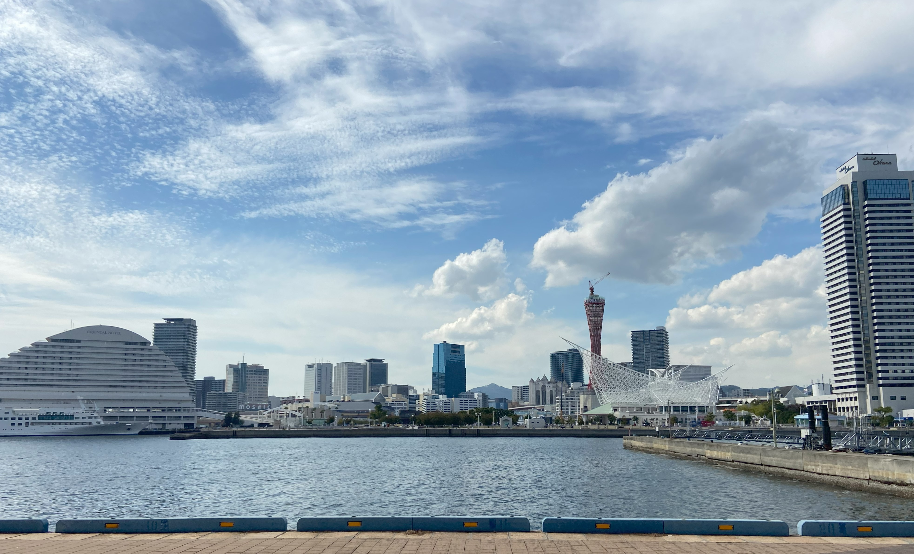
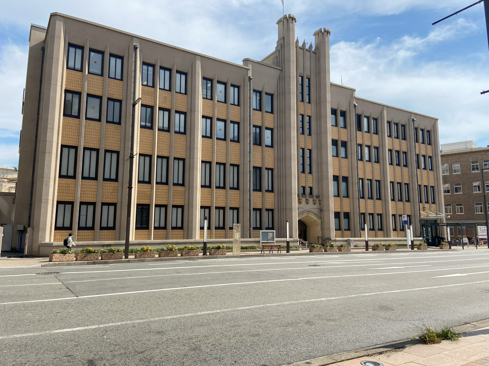
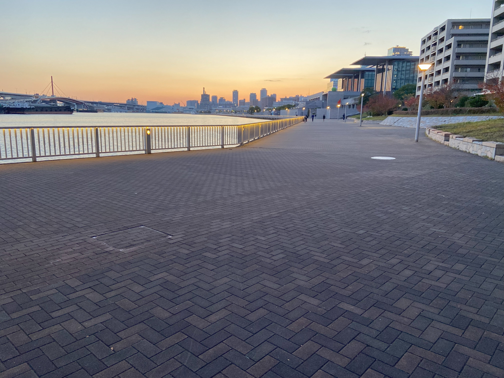

概要
北には山々、南には港が広がる神戸は貿易港として様々な異国の文化を取り入れて発展してきました。
そんな神戸市の中心地、三宮の静かな場所を紹介します。
おすすめスポット
みなとのもり公園
おすすめ時間帯：朝

JR三ノ宮駅から南に15分ほど歩いた所にある公園です。広々とした芝生の周りにウォーキングコースがあり、休憩用のベンチがあります。読書や昼食に最適です。
神戸市立三宮図書館
おすすめ時間帯：昼

雰囲気のある図書館で、たくさんの読書スペースがあります。読書や自習に利用できます。
HAT神戸ウォーキングロード
おすすめ時間帯：夕

美術館に隣接している公園です。海が見えるウォーキングロードを歩いてみるのはいかがでしょうか。
気分転換をする際に参考にしていただけますと幸いです。